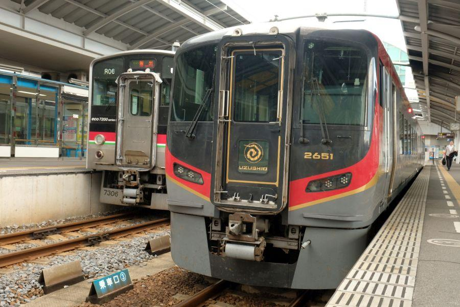
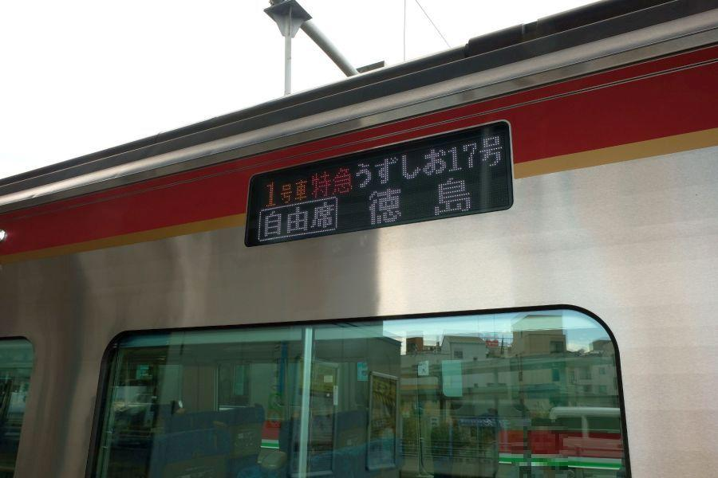
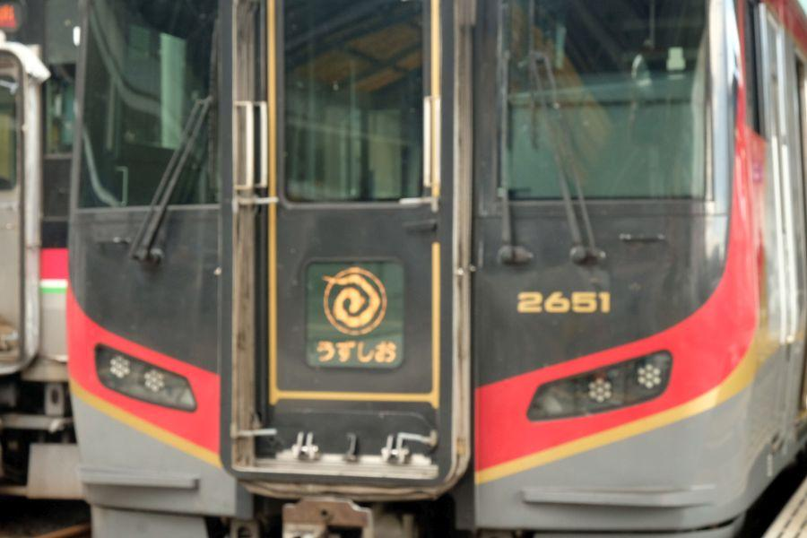
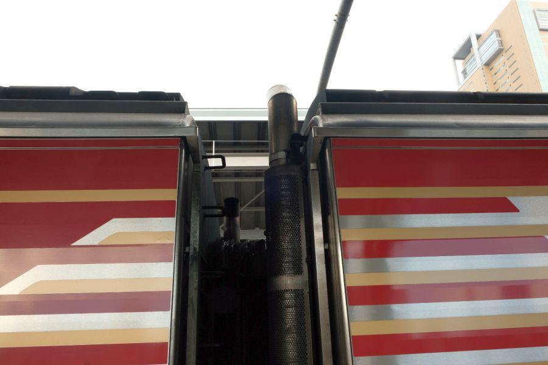
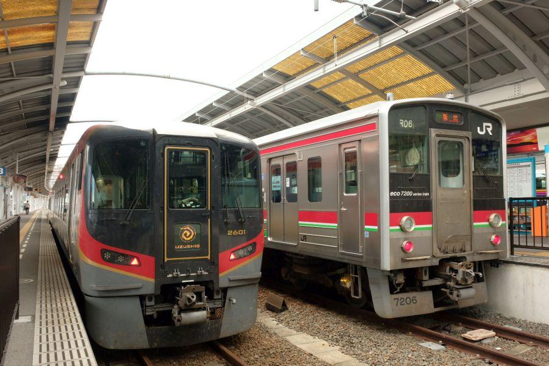
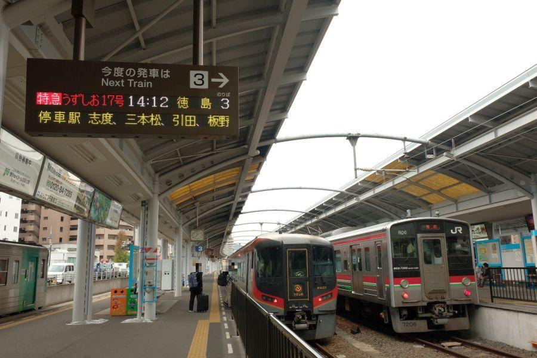

いくつもの個性を持つ特急うずしお号 < 特急うずしお / 岡山・高松 ～ 徳島 >

JR四国で使用されている列車の中で 最新鋭の車両となるのが、こちらのJR四国2600系気動車。

"特急うずしお号"
として、高松⇔徳島 の都市間輸送で活躍しています。

列車名の 「うずしお」 は、干潮・満潮時に鳴門海峡に現れる "渦潮" に由来。車両前後のヘッドマーク・テールマークに そのイメージがあしらわれています。

車両と車両の間にある 煙突は、自動車で言うところの マフラー。排気ガスを排出する装置。
軽油で走り 排ガスを出すとなると、基本的な動力構造は バスやトラック等の大型自動車と似ていると言えます。
最新鋭であり4両しか存在しない貴重な存在

高松駅の高徳線(こうとくせん)ホームである、1,2番線にて発車を待つ特急うずしお。
先代の車両たち(2000系,N2000系)が走り始めたのが 平成元年(1989)以降。多くの車両が 運行開始から20年以上経過しているため、新型車両への置き換えを目的として 2600系気動車が開発された。
まず、先行開発として 2両+2両の計4両が製造されたのが、平成29年(2017)1月。
JR四国管内で試験走行が行われ、その結果を受けて最初に導入する路線を決めるとされた。
主に徳島・高知の非電化路線の走行を想定してテストが行われたが、土讃線(多度津⇔窪川)において問題が発生。
2600系は 車体傾斜装置(＝カーブに差し掛かった時に 大きくスピードを落とさずに走ることが出来る装置)に空気ばねを用いているため、路線にカーブが連続する土讃線では 空気の充填が間に合わず(＝一つカーブを抜けても またすぐ次のカーブがやってくる)、装置が正常に作動しなくなる可能性が指摘された。
結果、カーブが比較的少ない高徳線に投入されることとなり、以降の量産化は中止された。
後発車両は 車体傾斜装置に従来型と同じ 振り子式装置を用いて、量産されることとなった。
たった4両しかない、この車両の価格は
結果的に四両製造されただけに留まった その費用は約14億yen。一両あたり3億5千万yenほどとなる。
鉄道の車体価格と言われて ピンと来る方はなかなかいないと思いますが、パッと思いつくところでは 高性能を誇る新幹線が高額なのかな？ というところ。
新幹線の車体価格は、1億5千万yenから2億5千万yenの間。電動機(モーター)、運転室、グリーン車など 車体構造によって価格が異なります。
一方、在来線用の車両価格は、
電車... 1億yen前後
気動車... 1億5千万yen前後
気動車の方が高額なのは、近年は 動力装置にハイブリッド構造を用いる等、構造が複雑になっている列車が多いため。
これらだけを見ても 特急うずしおに用いられる2600系気動車の価格は高額で、なおかつ2編成4両しか存在しないことを考えると、開発コスパは極めて悪い。
投資したお金は大きかったが 最新鋭のこの車両で得ることができた実験結果は、これからの日本鉄道界の発展において 大きな礎となることでしょう。
日本で唯一がたくさん。特急うずしおの個性

主に 高松⇔徳島 間の都市間輸送の足として運行している特急うずしおですが、平成30年(2018)現在 16.5往復の運行本数は、同じJR四国の特急宇和海(松山⇔宇和島)と並んで、気動車としては国内最多。
そのうち二往復は 岡山駅に発着しています。
宇野線・本四備讃線(瀬戸大橋線)内は 特急南風(岡山⇔高知・中村・宿毛)と併結運転を行い、宇多津駅で切り離し。
特急うずしおは方向転換を行い、予讃線を走り 高松へ。この間で坂出を通過するが、これは 快速・特急・寝台特急を含め 坂出駅に停車しない唯一の列車です。
高松駅に着くと再度方向転換を行い、高徳線を走行して徳島へ。国内で二度 方向転換を行う列車は、岡山発着の特急うずしおだけです(一度... 小倉駅での特急ソニック、米原駅での特急しらさぎ等)。
運行されている車両は、
★ キハ185系気動車
★ N2000系気動車
★ 2600系気動車
と 三種類あり、国内の特急列車で 異なる三車両が運行されているのも、珍しい事例です。